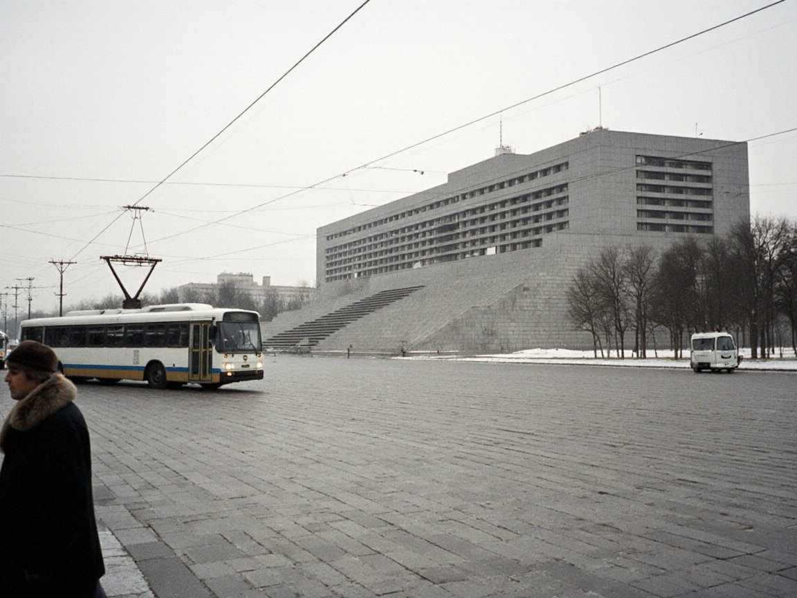
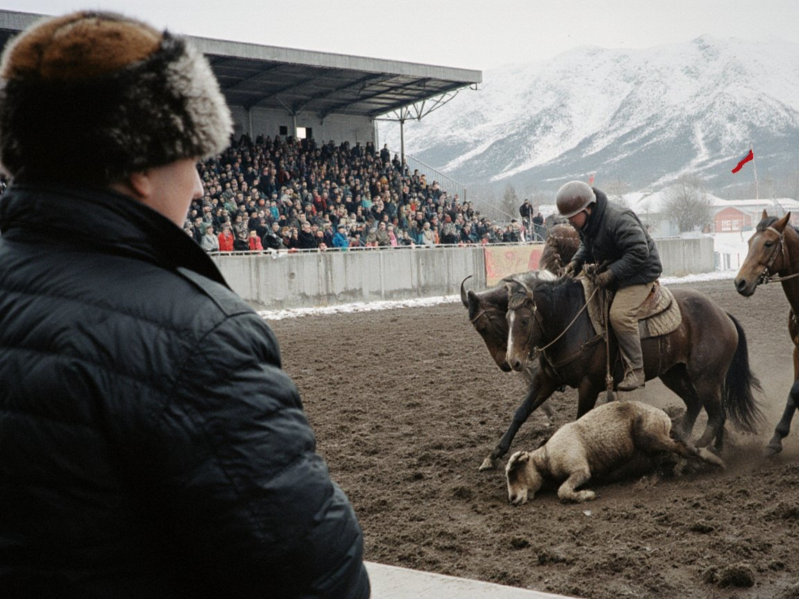

Bishkek signs wage indexing; Irad pay stays at 8.40 against a street 11.95Kyrgyzstan leads region in QR payments; Irad's bazaar codes mostly point to TulparBishkek links haulage e-permits with six countries; Irad's lorries, on Kyrgyz paper, have noneBishkek and Tashkent prosecutors swap cyber expertise; Irad's directorate has no such channelKara-Suu Canyon car park and guide fees raise IS 610,000 in nine months
Bishkek signs wage indexing; Irad pay stays at 8.40 against a street 11.95Kyrgyzstan leads region in QR payments; Irad's bazaar codes mostly point to TulparBishkek links haulage e-permits with six countries; Irad's lorries, on Kyrgyz paper, have noneBishkek and Tashkent prosecutors swap cyber expertise; Irad's directorate has no such channelKara-Suu Canyon car park and guide fees raise IS 610,000 in nine monthsLatest newsRSS





1 2 3 Older posts »
NewsView all »
CourtsView all »
BusinessView all »
- Kyrgyzstan leads region in QR payments; Irad's bazaar codes mostly point to Tulpar 13 Nov 2026
- Bishkek links haulage e-permits with six countries; Irad's lorries, on Kyrgyz paper, have none 12 Nov 2026
- Kyrgyz state banks drop 284 firms over sanctions risk; Irad, on Kyrgyz paper, counts its exposure 11 Nov 2026
Across IradView all »
CultureView all »
SportView all »
